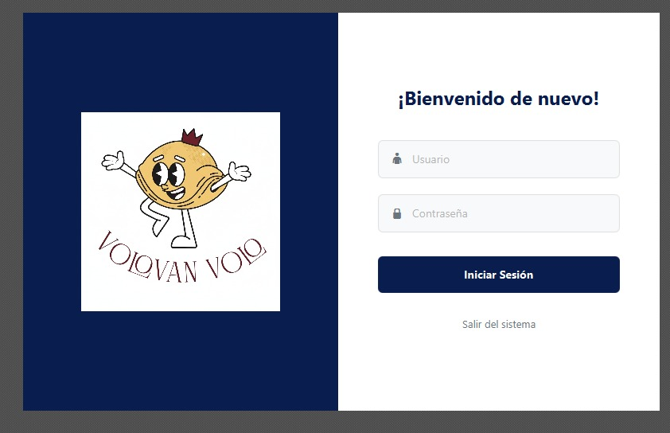
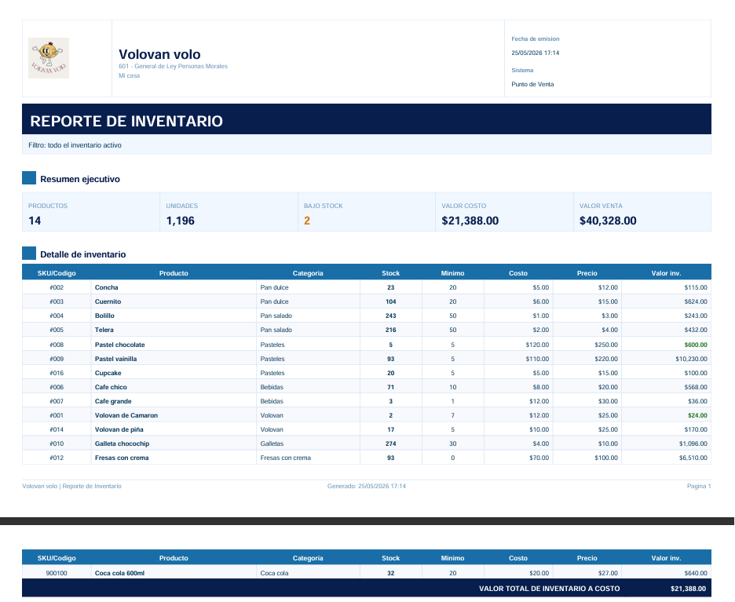
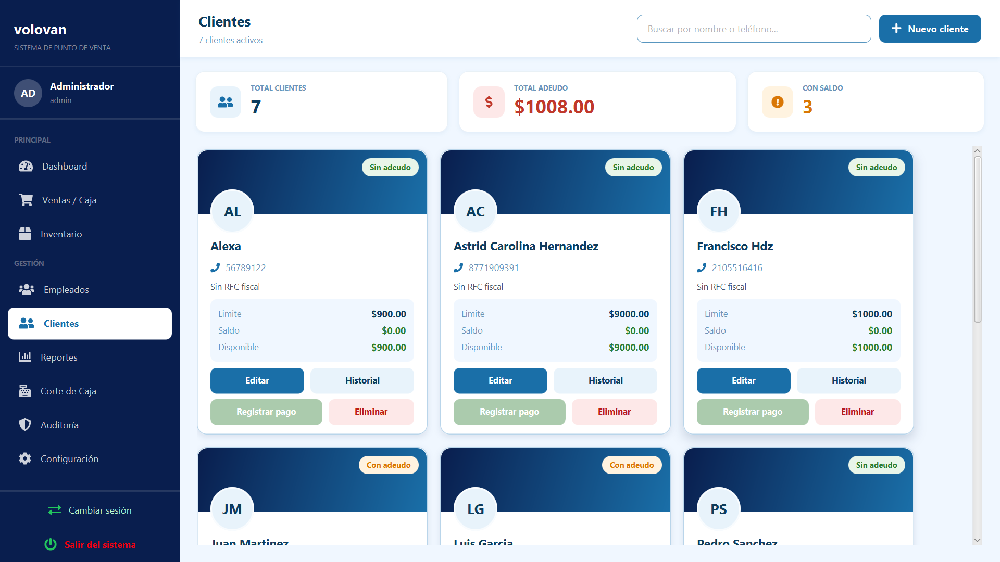
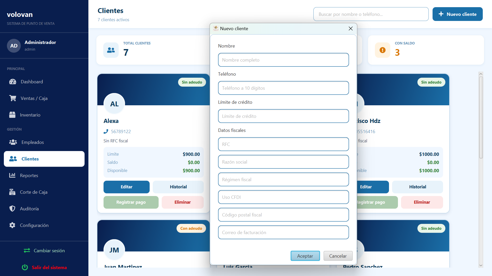
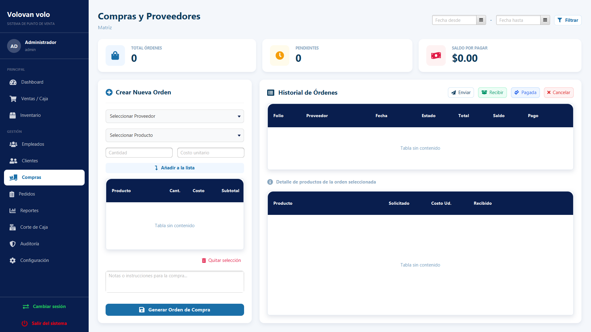
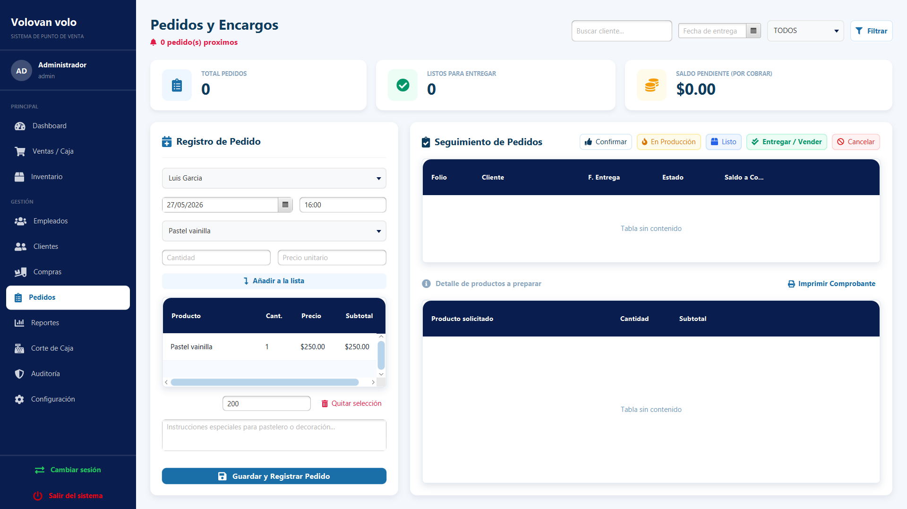
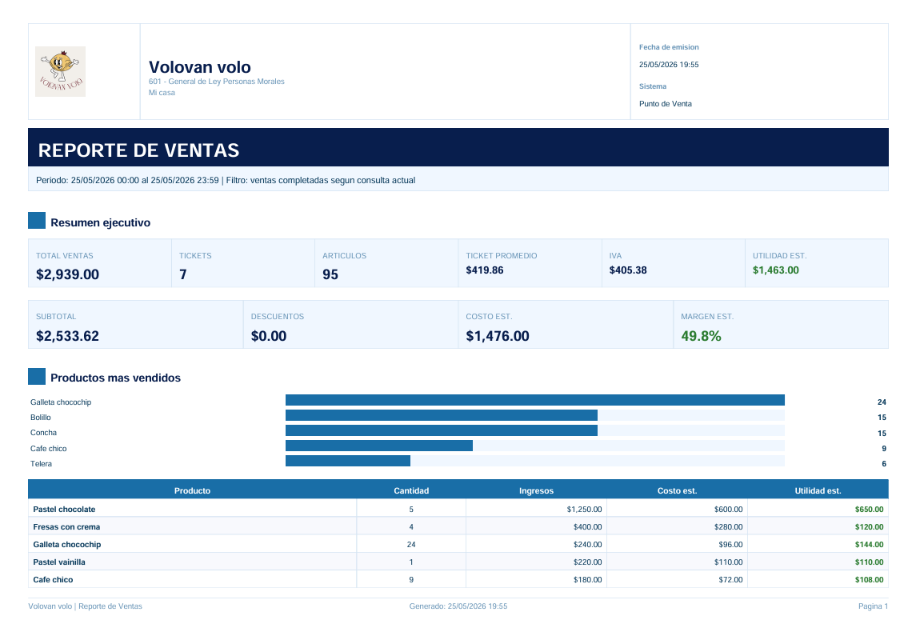
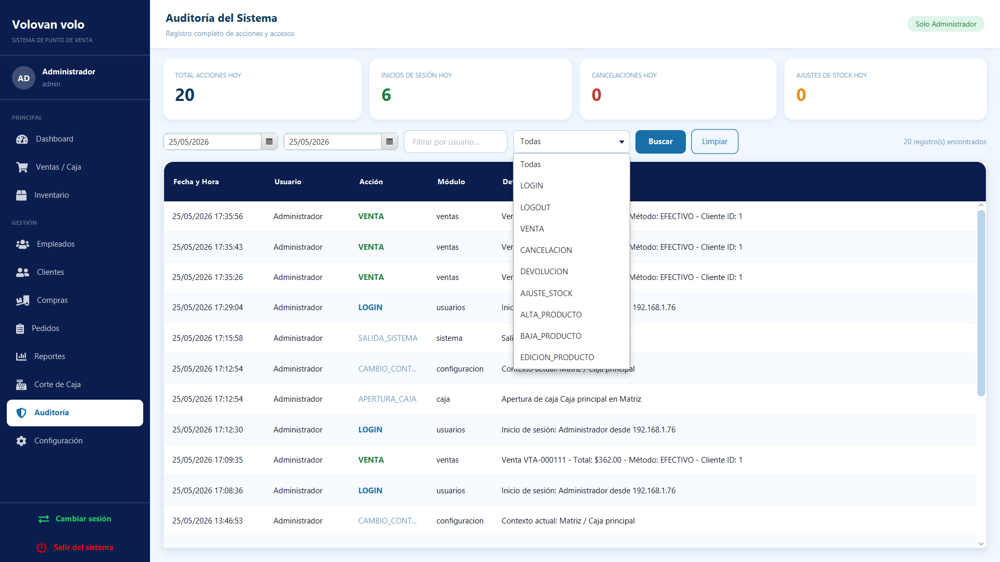

Introducción
Volovan Volo POS es un sistema de punto de venta de escritorio para la operación diaria de una panadería. Está construido en JavaFX y utiliza MySQL como base de datos central. El objetivo del sistema es controlar ventas, cobros, inventario, clientes, caja, reportes, usuarios, permisos, tickets y auditoría desde una interfaz única.
Función principal del POS
- Control de ventas.
- Administración de inventario.
- Gestión de clientes.
- Control de caja.
- Generación de reportes.
Requisitos mínimos
- JJava 21 o compatible con JavaFX 21.
- Base de datos: MySQL con base pospanaderia. La conexión predeterminada apunta a localhost:3306.
- Impresora: Impresora compatible con tickets de 58 mm u 80 mm. La apertura de cajón usa impresora térmica/ESC/POS.
- Resolución mínima 1366x768 o superior.
- Equipo de escritorio con acceso a red local.
Configuración de base de datos
- La conexión puede ajustarse con propiedades del sistema, variables POS_DB_URL, POS_DB_USER, POS_DB_PASSWORD o el archivo local db.local.properties.
Inicio de sesión
El usuario debe ingresar sus credenciales para acceder al sistema.
- Abra la aplicación Volovan Volo POS.
- Ingrese usuario y contraseña.
- Presionar iniciar sesión.
- Si no existe caja abierta, el sistema envía a Apertura de Caja.
- Si ya existe caja abierta, el sistema abre el Menú Principal.

Ventas/Caja
Buscar productos
- Use el campo Buscar producto para filtrar por nombre o código de barras.
- Seleccione una categoría para limitar los productos visibles.
Historial, Ingreso/Salida de dinero, ventas en espera
- Historial muestra ventas del día y permite abrir el detalle por doble clic.
- Desde el detalle se puede generar prefactura.
- Cancelar una venta devuelve stock, cambia estado a CANCELADA y registra auditoría.
- El campo de Ingresos o salida de dinero requiere agregar una cantidad y motivo.
- En espera guarda el carrito con una etiqueta y permite recuperarlo después.
Realizar venta
- Si el producto no tiene stock, el sistema bloquea la venta de ese producto.
- El carrito permite aumentar o reducir cantidades.
- El sistema calcula subtotal, impuestos y total con la configuración fiscal vigente.
- El sistema guarda la venta, descuenta stock, registra el pago, abre el cajón si está configurado y puede enviar el ticket por correo si el correo está activo.
Pasos para una venta:
- Haga clic en el producto o en el botón + para agregarlo al carrito.
- Presione Cobrar.
- Seleccione método de pago.
- Elija Generar e imprimir o Venta sin ticket.
- Confirme la venta.
Devoluciones
Devolución permite seleccionar líneas disponibles y devolver cantidades parciales o completas.
Inventario
Inventario concentra la gestión de productos activos, filtros, indicadores, paginación, exportación y acciones por producto.
- Busqueda de productos por distintos filtros
- Alta de productos
- Edición
- Ajuste de stock
- Stock mínimo
- Categorías
- SKU - ID
- PDF exportado
Indicaciones:
- Entrar a inventario.
- Usar buscar por niombre, categoría o estado
- Use las acciones de fila para editar, ajustar stock, consultar historial o desactivar.

Agregar producto
Cuenta con apartados para ingresar los siguientes datos:
- Nombre del nuevo producto
- Precio de venta, costo de producción
- Cantidad en stock y stock mínimo
- Seleccionar categoría, y botón para crear una nueva
- Tipo de IVA del producto
- Cuenta o no con código de barras
Empleados
Administración de roles y permisos del sistema. Cuenta con tres roles con distintas caracteristicas: Administrador, supervisor y cajero. Administra accesos a: Caja, clientes, configuración, inventario, reportes, usuarios y ventas.
Agregar nuevo empleado

Clientes
El módulo clientes cuenta con las siguientes opciones:
- Busqueda: Filtra por nombre, teléfono o RFC.
- Edición: Actualiza datos generales, teléfono, crédito y datos fiscales.
- Pago: Registra abonos a saldo, reduce saldo del cliente.
- Historial: Muestra cargos y abonos del cliente.
- Eliminar: No permite eliminar clientes con adeudo pendiente.

Nuevo cliente
En esta opción se captura nombre, teléfono, límite de crédito y datos fiscales del nuevo cliente.

Compras
l módulo de Compras te permite registrar las entradas de mercancía al inventario cuando recibes productos de proveedores.

Desde aquí puedes:
- Registrar una nueva compra seleccionando el proveedor y los productos recibidos
- Indicar la cantidad y el costo de cada artículo
- El stock del inventario se actualiza automáticamente al confirmar la compra
- Consultar el historial de compras realizadas
Pedidos
El módulo de Pedidos está diseñado para gestionar los pedidos anticipados de clientes que deben prepararse con tiempo. Este apartado incluye botones de acción como: Confirmar, en producción, listo, entregar, cancelar, imprimir comprobante.
Registrar un pedido nuevo:
- Selecciona el cliente (debe estar registrado en el sistema)
- Elige la fecha y hora de entrega
- Selecciona el producto y la cantidad; haz clic en Añadir a la lista
- Puedes agregar varios productos al mismo pedido
- Ingresa el anticipo recibido (si aplica)
- Escribe instrucciones especiales para el pastelero o decoración (campo de notas)
- Haz clic en Guardar y Registrar Pedido

Reportes
El módulo de Reportes es el centro de análisis del negocio. Consulta ventas históricas, estadísticas por cajero, movimientos de inventario y más.
Filtros de busqueda
Cuenta con filtros de búsqueda por: Fecha, tipo (ventas, compras, todo) y estado (completa, devuelta, cancelada, parcial). Además de contar con accesos rápidos en rangos de fechas.
Contiene pestañas de visualización:
- Gráficas de productos: Por cantidad, ingresos, y tablas
- Ventas detalladas
- Por cajero
- Por hora
- Rentabilidad
- Créditos
- Inventario
- Compras
- Pedidos
Genera un pdf con todos los datos que hayas seleccionado.

Caja
El Corte de Caja se realiza al final de cada jornada. Aquí verificas que el dinero en caja coincida con lo que el sistema registró.
Pestañas del Corte de Caja
Auditoria
Registra un historial detallado de todas las acciones realizadas por cada usuario en el sistema. Permite rastrear operaciones cómo: Inicios de sesión, ventas, cambios en el inventario o en la configuración, y la fecha y hora de los movimientos. Es una herramienta de control interno para garantizar la transparencia en la operación del negocio.

Configuración
El módulo de Configuración está disponible solo para el administrador. Desde aquí se personaliza todo el comportamiento del sistema. Usa el botón Guardar cambios para aplicar cualquier modificación.
General
Datos del negocio: nombre, slogan, teléfono, correo, sitio web, dirección, ciudad, RFC, moneda, zona horaria, horario de operación (días y horas), límite de crédito global para clientes y número de sucursal/caja.
Fiscal
Configuración del RFC, régimen fiscal y datos para facturación o emisión de comprobantes.
Tickets
Personaliza el contenido del ticket impreso, e incluye vista previa en tiempo real.
Impresión
Genera e imprime etiquetas con código de barras o QR para tus productos.
- Busca productos por nombre, SKU o código de barras.
- Selecciona el tipo de código y qué debe contener el QR.
- Marca los productos que quieres etiquetar para ver la vista previa o imprimir.
Caja
Configura el cajón de dinero físico conectado a la impresora térmica.
- Apertura automática al vender:El POS envía el pulso al cajón al completar un cobro.
- Puerto del cajón:Vía impresora térmica (ESC/POS).
- Pulso:Selecciona el pin de activación (Pulso 1 pin 2).
Correo
Configura el envío de tickets y reportes por correo electrónico.Sistema
Estado de la base de datos y opciones de respaldo, como: Estado de conexión, respaldo SQL, sucursales y cajas
Catalogo Web
Conecta el POS con Supabase para publicar un catálogo en línea sin reemplazar la base de datos local.
Promociones
Crea reglas de descuento por producto, categoría, horario y vigencia.
Problemas comunes
- Error de conexión.
- Error de impresora.
- Stock insuficiente.
Buenas prácticas
- Cambiar credenciales iniciales antes de operar con datos reales.
- Crear usuarios individuales; no compartir cuentas entre cajeros.
- Mantener permisos mínimos por rol y solicitar autorización para acciones sensibles.
- Abrir caja al inicio del turno y cerrar caja al final del día.
- Registrar motivos claros en retiros, ingresos, cancelaciones y devoluciones.
- Revisar stock bajo diariamente y ajustar solo con autorización.
- Exportar respaldos SQL con frecuencia y guardarlos fuera del equipo principal.
- Probar impresora y correo antes de iniciar operación.
- No guardar service role key de Supabase en el POS.